2 Graphics and Gapminder
“The world cannot be understood without numbers. But the world cannot be understood with numbers alone.”
Background Hans Rosling and his Gapminder team have done excellent work in collecting and presenting data on developments in world health, country by country, over many years.
Questions How has life expectancy changed over time? How do the patterns differ by countries? How good are the data?
Sources Gapminder website (Rosling (2013))
Structure Life expectancy estimates for 187 countries from 1800 to 2016. There are also forecasts up to 2100 giving 301 data points per country in all.
2.1 Gapminder and Hans Rosling
The Gapminder Foundation that Hans Rosling and colleagues set up continues to collect and monitor global patterns of health. Anyone who has seen a film of one of Rosling’s talks (Rosling (2009)), or was lucky enough to attend one, will remember his scatterplots animated over time. One he used was of life expectancy at birth plotted against fertility rate. The main patterns he described are clear and informative, emphasising the overall increases in life expectancy across all countries. If life expectancy is examined over time on its own, there are additional features that Rosling did not have time to discuss, including some dramatic sharp drops and rises.
Code
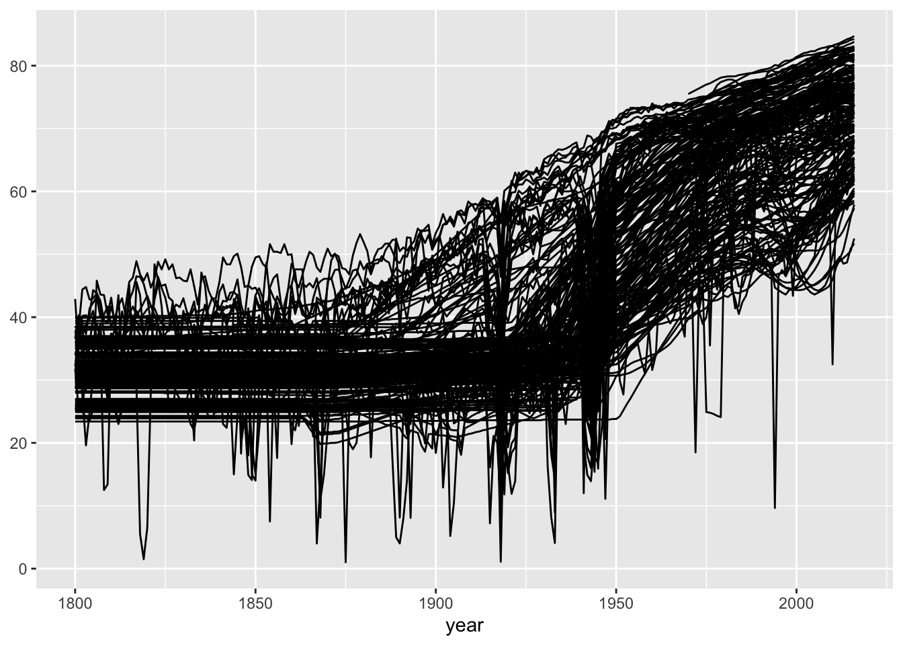
Figure 2.1: Life expectancy at birth in years for 187 countries over the years 1800 to 2016
The life expectancy data for each country has been plotted against time in Figure 2.1. This is a default plot and could be improved in many ways. Nevertheless much can be seen in it. Two striking features were not mentioned in Rosling’s talks: the sharp falls and rises just mentioned, and the unchanging levels (horizontal lines) during the nineteenth century. Figure 2.2 picks out these two features.
Code
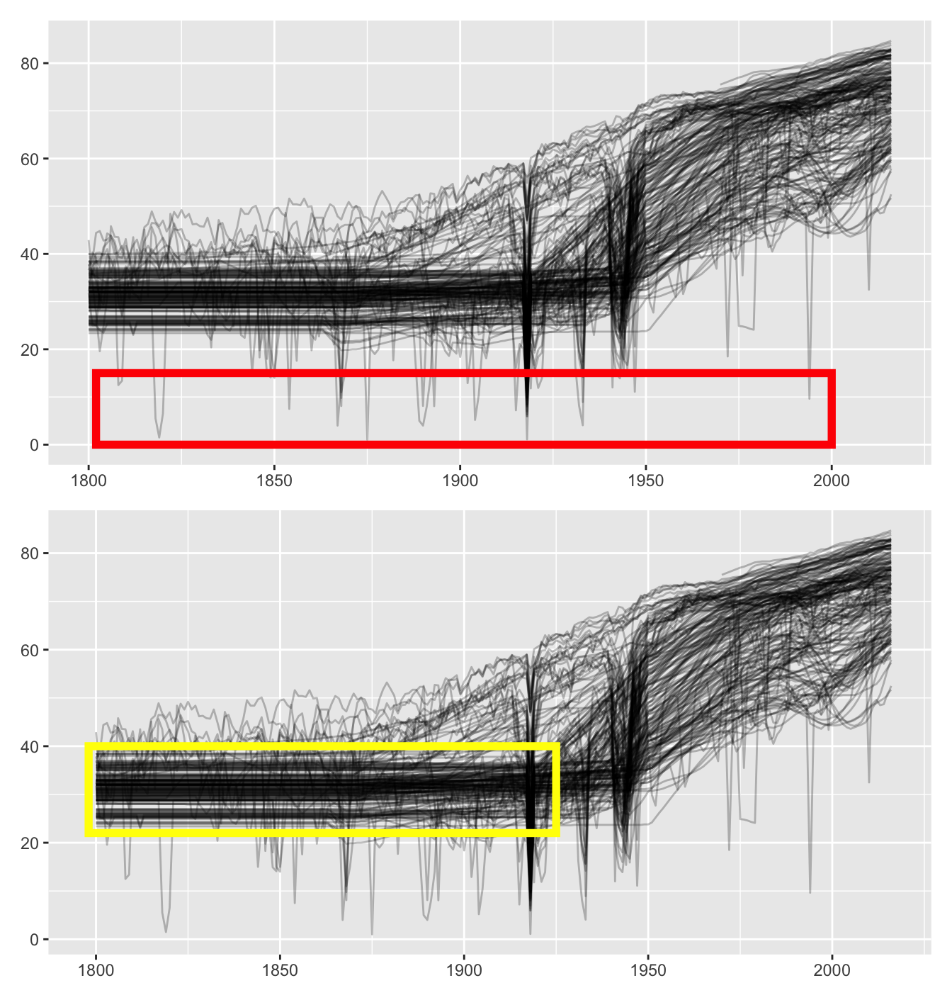
Figure 2.2: Life expectancy graphics: some sharp falls and rises marked (above), straight lines marked (below)
The plot above picks out some of the falls and rises. For certain countries in certain years it is well known that there were population disasters: the famine in Ukraine in 1932-33 and the Irish potato famine in the second half of the 1840s. The Gapminder researchers endeavoured to estimate data for these and other catastrophic years using modelling techniques described in a paper published on their website (Lindgren (2014)). It is impressive that they went to so much trouble to deal with this issue, although, as they write themselves, they can only provide guesstimates. It is important that they draw attention to catastrophes, it would be wrong to simply ignore them. Europeans readers may have heard of the Ukrainian famine in 1932-33 and the Irish famine in the late 1840s, but few will know of the plague in Tunisia in 1891 or of the measles epidemic in Fiji in 1875.
The straight lines highlighted in the lower plot imply that life expectancies for many countries were constant over the period. That is highly unlikely! What has happened is that a single value was estimated to cover many years, where no other information was available. Although Rosling did not talk about this, the information is available in the Gapminder display under a button labelled “Data Doubts” at the foot of the plot to the right.
2.2 What else can be seen in Gapminder’s plots?
Several further features can be noticed. Figure 2.3 highlights them. Which countries had higher life expectancy in the 19th century (upper left)? Which countries had the most dramatic falls most recently (upper right)? Which country had consistently lower levels in the first half of the 20th century (lower left)? Which country’s data began or continued after a gap around 1970 (lower right)?
Code
xp1 <- p1 + annotate("rect", xmin=1820, xmax=1880, ymin=40, ymax=55, colour="green", alpha=0, size=2)
xp2 <- p1 + annotate("rect", xmin=1988, xmax=2018, ymin=6, ymax=40, colour="orange", alpha=0, size=2)
xp3 <- p1 + annotate("rect", xmin=1900, xmax=1960, ymin=20, ymax=30, colour="purple", alpha=0, size=2)
xp4 <- p1 + annotate("rect", xmin=1960, xmax=1980, ymin=60, ymax=80, colour="pink", alpha=0, size=2)
(xp1+xp2)/(xp3+xp4)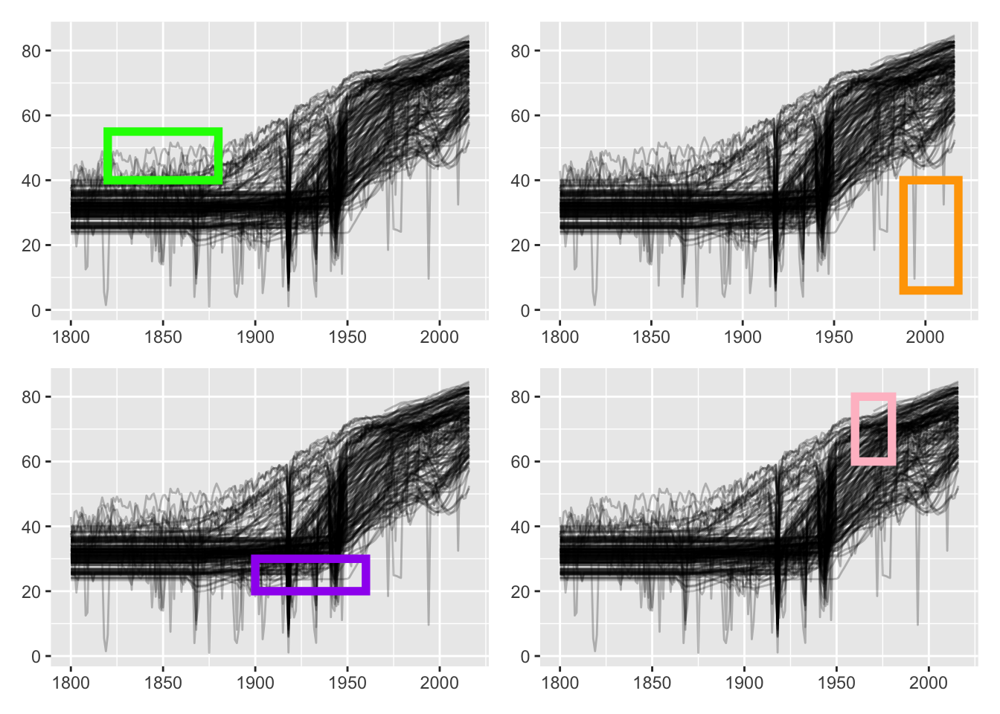
Figure 2.3: Further features in the life expectancy graphic
Countries with highest values in the nineteenth century can be found by looking at the maximum values by year. Norway had the highest value for \(68\) of the hundred years and Sweden came second with the highest value for \(11\) years. Norway and Sweden were in a political union for most of the nineteenth century, but they kept their own institutions and presumably reported their own statistics. At the very beginning of the century Norway was in a union with Denmark. Figure 2.4 shows the life expectancy time series of the three countries and they are very similar. The only noticeable differences are that Denmark was less affected by Spanish Flu at the end of World War I and consistently reported slightly lower levels more recently.
Code
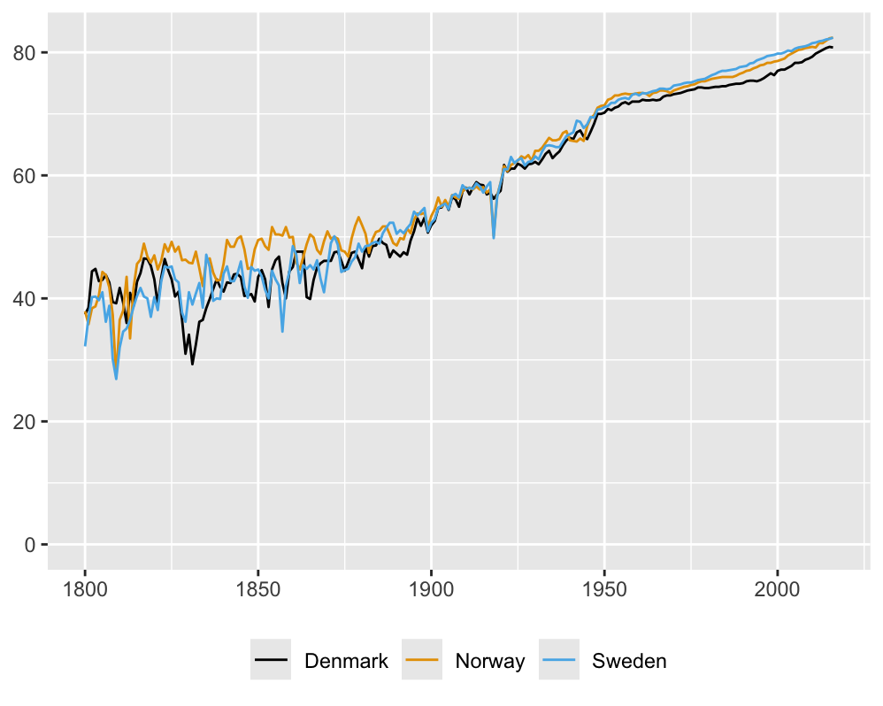
Figure 2.4: Life expectancy for Denmark, Norway and Sweden
The two countries with recent serious falls (the upper right graphic in Figure 2.3) were Rwanda in 1994 (the civil war) and Haiti in 2010 (an earthquake). They can be identified by selecting countries with life expectancies less than \(40\) after 1990.
The country with lower levels of life expectancy in the first half of the 20th century (the lower left graphic in Figure 2.3) can be found by looking at the data for 1950, when it had the lowest value of all countries, just before it started to improve. This was Yemen, a country whose recent history of civil war will have made conditions worse again.
The country whose data appear to begin around 1970 (the lower right plot in Figure 2.3) can be found from having the highest life expectancy in 1975. This was Andorra, one of three small countries with values reported only from 1970 on that were excluded from further analyses in this chapter. Another ten small countries with little data, e.g., the Holy See (Vatican City State), were excluded as well.
Not all features are equally important and individual ones may be of more interest to some people than to others. There is much to be seen in graphics and looking closely will prove rewarding.
2.3 Analysis by regions of the world
Colouring countries by Gapminder’s classification of the world into four regions gives Figure 2.5.
Code
data(GapRegions)
GapRegions[GapRegions$name=="Macedonia, FYR", "name"] <- "North Macedonia"
rc <- full_join(GapRegions, GapLifeE, by=c("name"="country"))
rcX <- rc %>% select(-12) %>% filter(!is.na(`2000`), !is.na(`1900`)) %>% rename(country=name)
rcLE <- rcX %>% select(country:`2016`) %>% pivot_longer(cols=`1800`:`2016`)
rcLE <- rcLE %>% mutate(year=as.numeric(name))
colsG <- c("#E0566B", "#85BF41", "#104E8B", "#4EBCCB")
names(colsG) <- c("asia", "americas", "europe", "africa")
pr4 <- ggplot(rcLE, aes(year, value, group=country)) + geom_line(alpha=0.5, aes(colour=four_regions)) +
scale_color_manual(values = colsG) + theme(legend.position="bottom", legend.title=element_blank()) + ylab(NULL) + xlab(NULL)
pr4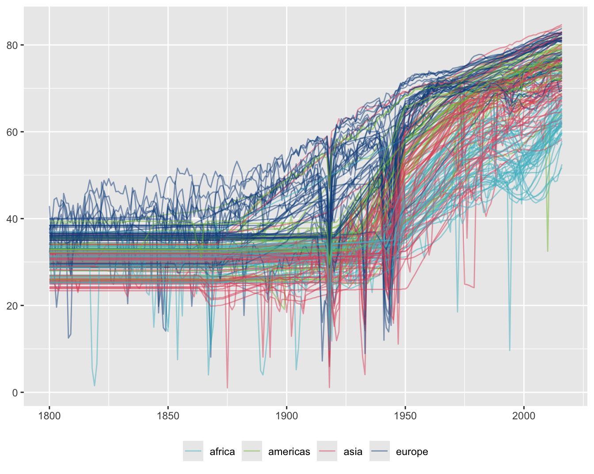
Figure 2.5: Life expectancy time series coloured by the four regions classification
European countries have had the highest life expectancies over the last two hundred years and African countries have had most of the lowest in recent years. There were two sharp falls for European countries in the first half of the 20th century. The first was due to a combination of World War I and the Spanish flu, while the second was due to World War II.
It is difficult to see much more and any colour scheme would have problems with overplotting. A better approach with so many series is to use faceting, splitting the data into subsets and plotting them in a grid. Figure 2.6 shows the same series by each region separately.
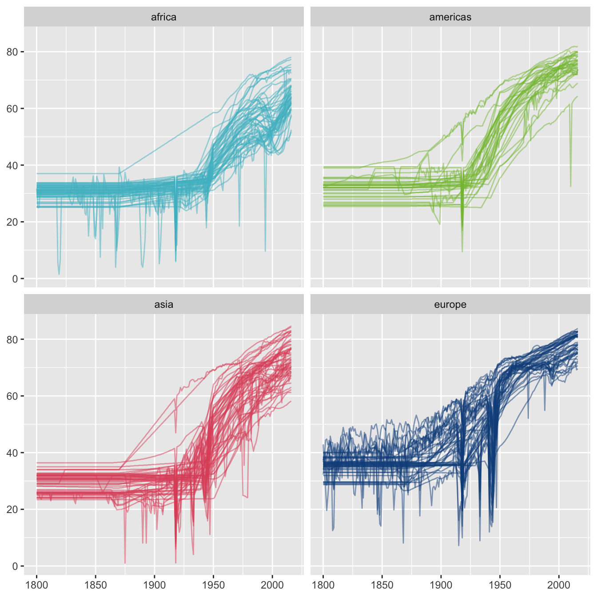
Figure 2.6: Life expectancy time series drawn separately for the four regions classification
Features now stand out that were not visible before. A few countries in all three regions other than Europe had much higher life expectancies between 1880 and 1950 than most countries in their regions. There is a country in Europe that had lower values from 1950 to 1990 than other European countries.
Finding the countries with the top values in each of the three other regions in 1900 picks out Australia and New Zealand in Asia (so it is not surprising that they have very different patterns), Seychelles in Africa, and, again unsurprisingly, the USA and Canada in the Americas. The European country with lowest values for many years after 1950 was Turkey.
It would be useful to know how big and comparable the regions are. The numbers of countries in each region in 2016 are shown in Figure 2.7.
Code
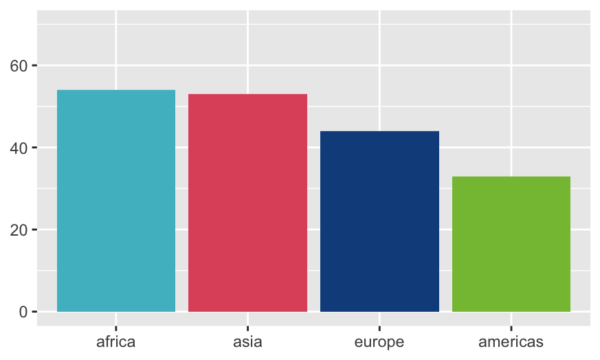
Figure 2.7: Numbers of countries in each of the four regions, ordered by the numbers
The numbers are not too far apart, but population data would provide more information on size. This is covered next.
2.3.1 Taking account of country size
Population data are also available from the Gapminder website and these have been downloaded and merged with the life expectancy data. The sizes of the four regions by total population in 2016 are shown in Figure 2.8. The regions are ordered by population. This paints a different picture. Asia had more population in 2016 than the other three regions combined.
Code
data(GapPop)
pops <- GapPop %>% filter(country %in% rcX$country)
pLE <- full_join(pops %>% select(country, `1956`, `2016`), rcX %>% select(country, four_regions))
reg4Y <- ggplot(pLE, aes(fct_reorder(four_regions, -`2016`, sum), weight=`2016`/1000000)) + geom_bar(aes(fill=four_regions)) + xlab(NULL) + ylab("Population (millions)") + ylim(0, 5000) + guides(fill="none") + scale_fill_manual(values = colsG)
reg4Y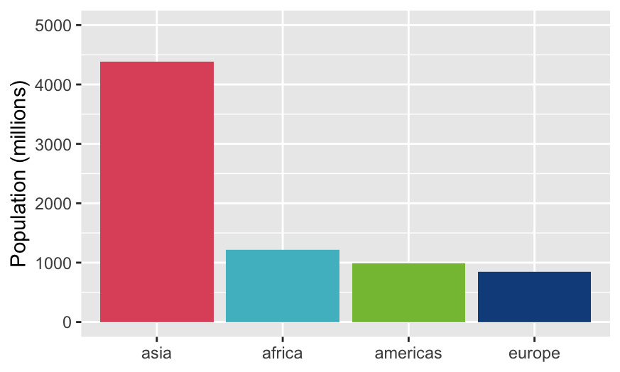
Figure 2.8: Total populations for each of the four regions
Up till now the time series graphics in this chapter have treated each country displayed equally. Gapminder itself (Rosling (2013)) makes much use of bubble charts to additionally show the sizes of countries in its scatterplots. That would not work well for time series, which is why Gapminder uses animation. Two other approaches are possible. Countries could be selected by population size or the data could be aggregated across regions using population data by year as weights.
The first approach is shown in Figure 2.9. Life expectancies for the six countries with a population of over \(200\) million in 2016 are shown.
Code
pops <- pops %>% mutate(p2016=`2016`) %>% arrange(desc(p2016)) %>% mutate(cx=cumsum(p2016))
p16 <- pops %>% select(country, p2016) %>% slice_max(p2016, n=6)
rcW <- rcX %>% filter(country %in% p16$country)
rcLE16 <- full_join(p16, rcW) %>% select(country:`2016`) %>% pivot_longer(cols=`1800`:`2016`)
rcLE16 <- rcLE16 %>% mutate(year=as.numeric(name))
ggplot(rcLE16, aes(year, value, group=country)) + geom_line(aes(colour=country)) + geom_text(data=rcLE16 %>% filter(year==last(year)), aes(label=country, x=year+5, y=value, colour=country), hjust=0) + guides(colour = "none") + xlab(NULL) + ylab(NULL) + xlim(1800, 2040) + expand_limits(y=0)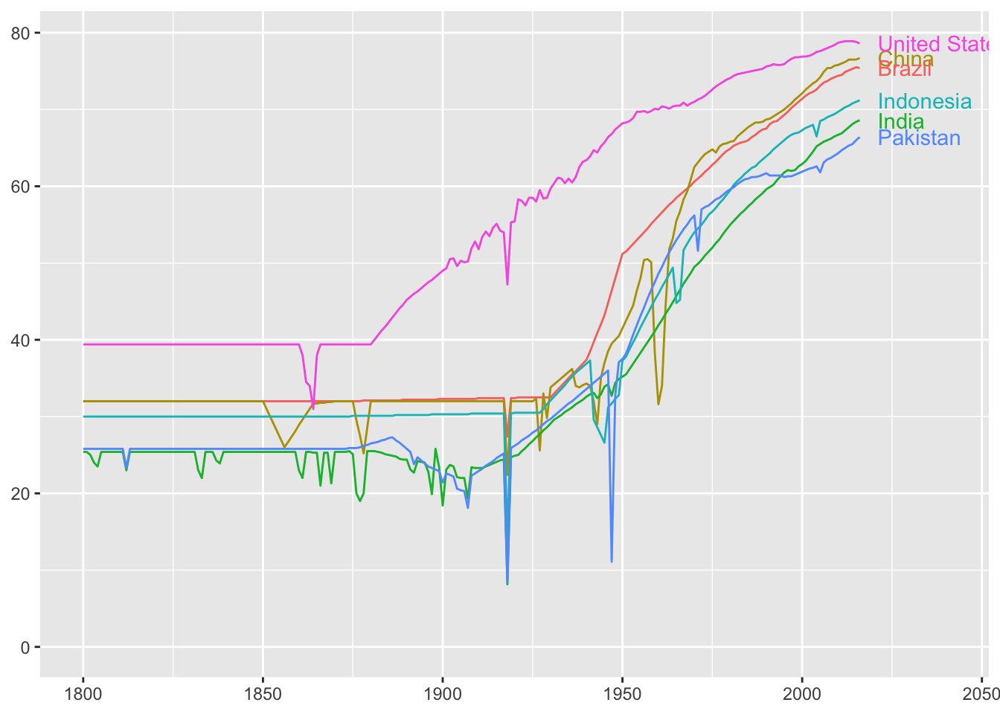
Figure 2.9: Life expectancy time series for the six biggest countries in 2016
As with earlier graphics, the overall trend of rising life expectancies can be seen, mainly during the second half of the 20th century, and the effects of wars and other disasters on individual countries. These would be more visible if each series was drawn separately. That has the further advantage of being able to use the width of the line to represent the population in 2016 (Figure 2.10).
Code
rcLE16 <- rcLE16 %>% mutate(Country=fct_reorder(country, p2016, mean))
ggplot(rcLE16, aes(year, value, group=country)) + geom_line(aes(colour=country, linewidth=p2016)) + xlab(NULL) + ylab(NULL) + facet_wrap(vars(Country), nrow=3) + guides(colour="none", linewidth="none") + expand_limits(y=0) + scale_linewidth(limits=c(0, 1500000000), range=c(0,3))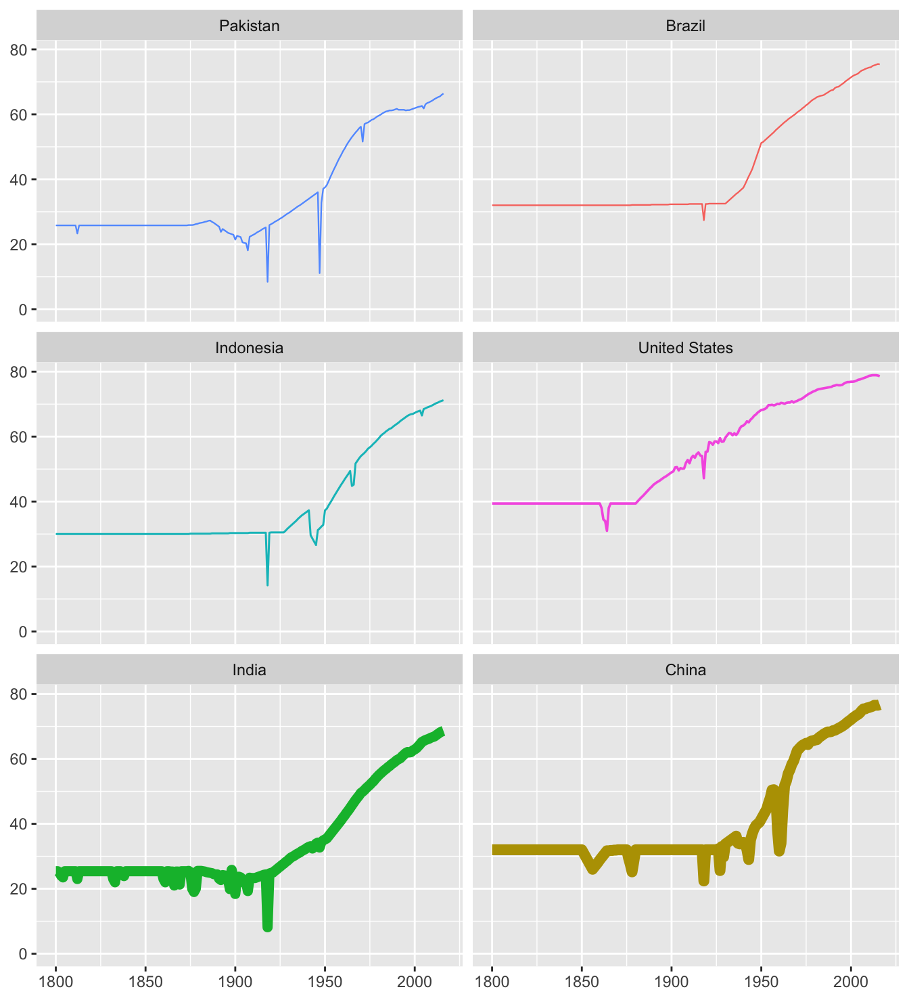
Figure 2.10: Life expectancies for the six biggest countries with line widths scaled by their 2016 populations
There is a disadvantage of incorporating population size. China and India are so much bigger that the finer details of their series are lost, although six major falls in Chinese life expectancy stand out. All six countries suffered from the Spanish flu in 1918, Brazil least of all. Pakistan suffered dramatically in 1947 after they gained independence from Britain. Their border conflict with India after partition had a much greater relative effect on them than on India.
These six countries actually accounted for 50.2% of the total world population in 2016. It is interesting to see how that changed over time, cf. Figure 2.11. If the nineteenth century population figures for China are to be believed, if indeed any of the population figures from that period are to be believed, China used to be relatively far bigger!
Code
popX <- pops %>% mutate(across(`1800`:`2016`, ~ ./sum(.)))
popY <- popX %>% filter(popX$country %in% p16$country) %>% select(country:`2016`) %>% pivot_longer(cols=`1800`:`2016`)
popY <- popY %>% mutate(year=as.numeric(name))
ggplot(popY, aes(year, value, group=country)) + geom_line(aes(colour=country)) + geom_text_repel(data=popY %>% filter(year==last(year)), aes(label=country, x=year+5, y=value, colour=country), nudge_x=5, min.segment.length=4) + guides(colour = "none") + xlab(NULL) + ylab(NULL) + xlim(1800, 2040)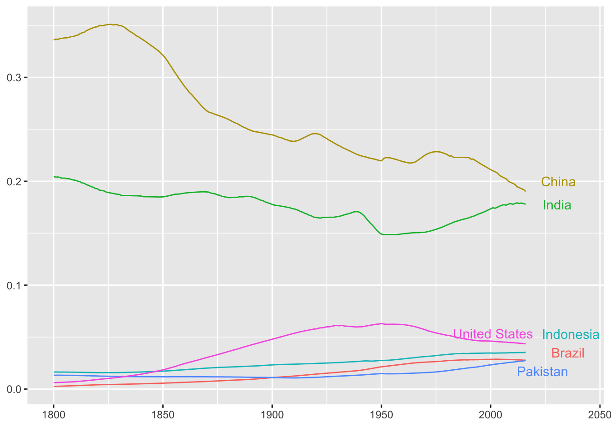
Figure 2.11: Proportion of the world population over time made up by the six biggest countries in 2016
2.4 Checking what is in the data
The life expectancy at birth data are provided by Gapminder for \(187\) countries for the years 1810 to 2016. UN forecasts for the years 2017 to 2100 are also included. Gapminder offers a separate file of countries by regions with groupings into \(4\), \(6\) or \(8\) regions. Merging the two files reveals that there are \(11\) countries in the region file with no corresponding life expectancy data. \(10\) of these are small areas (including the Holy See and Tuvalu) and one is Macedonia FYR. It turned out this is called North Macedonia in the life expectancy file and the name North Macedonia has been used. Checking for completeness of the data showed that three further small countries (Andorra, Dominica, Marshall Islands) had some life expectancy data, but not for the years 1800 to 1969 and they were excluded from most of the plots.
2.5 The importance of data definitions
Gapminder defines life expectancy at birth as the average number of years a newborn child would live if current mortality patterns were to stay the same. In comparing values for different countries over time, the assumption is made that the estimates for each country for each year have been prepared in the same way, that definitions have been applied consistently, and that data collection and reporting have been standardised. Older data are likely to be less reliable and more uncertain. Infant mortality rates have dropped substantially, even in more recent times, having a strong positive effect on life expectancy at birth.
Comparing countries over time also assumes that the countries have remained the same. This is definitely not true, as Gapminder points out. They make the default assumption that borders have always been as they are now. (Their webpage includes an instructive video of how borders have changed since 1800.) Examples of large changes include Germany, the countries in the former Soviet Union, and the Indian subcontinent.
2.6 Discussion
Gapminder offers a lot more data than has been studied here. Graphics help bring the information out and help present it to others. The time series plots in this chapter have analysed just one variable, life expectancy at birth. If scatterplots are drawn, as Hans Rosling often did, and all the options available in the Gapminder software are used, two or more variables can be displayed. Analyses can quickly get very complicated, which just shows that graphics can be more difficult to work with than might be expected.
In a study reported by Tonnessen (2020), eighteen-year old schoolchildren were observed using Gapminder to carry out tasks set by their teacher. The researcher noticed several difficulties the participants faced, mostly because they did not have enough knowledge and experience of the software or with that kind of graphical display. The assumption that graphics are easy to understand is an easy, if mistaken, one to make.
Answers Life expectancy has improved dramatically, with some interruptions, over the last one hundred years, particularly for Western nations. Other countries have caught up a lot, but still lag behind. Data for the 19th century is incomplete and suspiciously constant.
Further questions Life expectancy is one of hundreds of indicators available from Gapminder, covering not only health, but education, environment and many other areas. There is an unlimited number of investigations that could be carried out.
Graphical takeaways
- One graphic is not enough. Different versions of the same graphic provide more information. (Figures 2.1 and 2.6)
- Graphics show information directly that analytic methods cannot find. (Figures 2.2 and 2.3)
- Faceting picks out differences within groups. (Figure 2.6)
- Unpolished graphics can still reveal important information. (Figure 2.1)